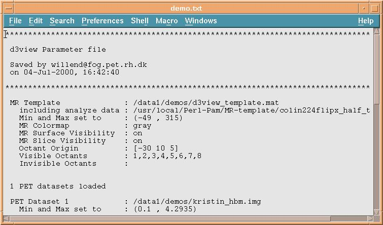

d3view Users tutorial (8): Reading and saving parameters
********************************************************************************* d3view Parameter file Saved by willend@fog.pet.rh.dk on 04-Jul-2000, 16:42:40 ********************************************************************************* MR Template : /data1/demos/d3view_template.mat including analyze data : /usr/local/Perl-Pam/MR-template/colin224flipx_half_talairach Min and Max set to : (-49 , 315) MR Colormap : gray MR Surface Visibility : on MR Slice Visibility : on Octant Origin : [-30 10 5] Visible Octants : 1,2,3,4,5,6,7,8 Invisible Octants : 1 PET datasets loaded PET Dataset 1 : /data1/demos/kristin_hbm.img Min and Max set to : (0.1 , 4.2935) PET Colormap : hot PET Slice Visibility : off PET Surface Visibilit : on PET Blob Visibility : off Extra Options window (Lights not listed) Surface Material Ambient Light : 0.3 Diffuse Light : 0.8 Specular Light : 0.3 Lighting Method : Gouraud AC/PC Planes and Axes Plane Visibility : on Edge Color : [0 0 0] Face Color : [0.040962 0.3108 1] Axis Visibility : on Axis Color : [1 1 1] X Label : x Y Label : y Z Label : z Label Color : [0 0.67718 1] Title : Title Color : [1 1 1] Misc Properties Surface Resolution : 44225 PET/MR color blending : on MR Surface Color : [0.5 0.5 0.5] Background Color : [0 0 0] Use Bgcolor for prints : off End of Parameter List
